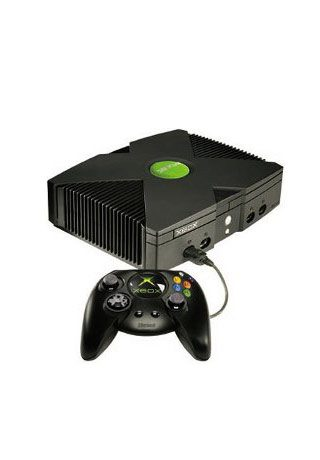
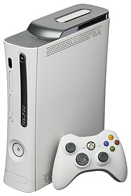
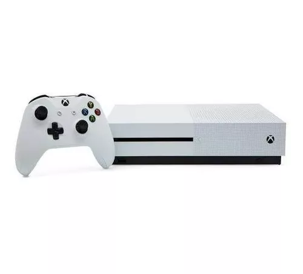
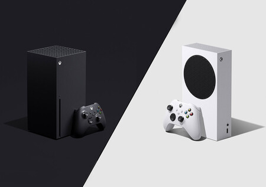

| Año de publicacion | Acerca de | Imagen |
| 2001 | Concretamente, un 15 de noviembre anunciaba la salida y venta oficial de la primera consola de mesa de parte de Microsoft. |
 |
| 2005 | Su lanzamiento fue 4 años mas tarde que el primer modelo, adelantandose esta vez a la consola de Sony. |
 |
| 2013 | Fue publicada un 22 de noviembre pero tardo en salir a la venta en Europa y Japon. |
 |
| 2020 | La mas actual de todas, la XBOX seri X15, competidoras de la Playstation 5 |
 |